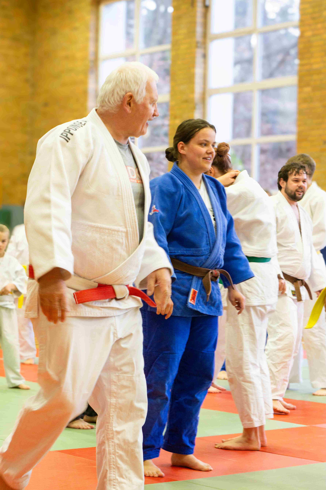
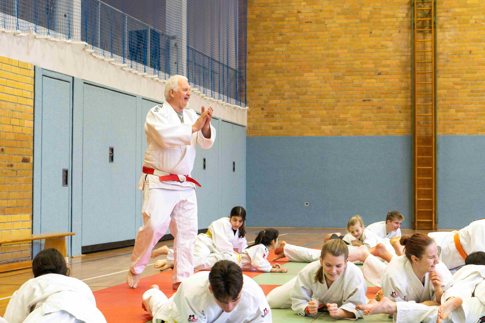

Franz Kofler
beim Judo Club Alt Garge e.V.
Der 564. Verein, das 1202. Training
Judo und die damit verbundenen Werte in die Öffentlichkeit zu tragen - dieses Ziel verfolgt der Österreicher Franz Kofler mit seiner Judofamily. Dafür hat er 2017 das "Projekt 1000" ins Leben gerufen. Über 20.000 Teilnehmerinnen und Teilnehmer in ganz Europa haben bislang von diesem Vorhaben profitiert.
Kofler ist 66 Jahre alt, Träger des 6. Dan, arbeitete hauptberuflich als Judotrainer mit einer A-Lizenz in Luxemburg und ist jetzt Pensionär. Seit 2017 ist er unterwegs und trägt die Lebensschule Judo mit allen ihren Werten in die Welt. Er möchte 1000 Judovereine besuchen und 1000 Trainingseinheiten absolvieren - alles innerhalb von zehn Jahren.
"Mein Trainer hat ein Feuer entzündet, das noch heute brennt."
Franz Kofler, Judo-Trainer, 6. Dan
Als sich die Möglichkeit ergab, Franz Kofler für ein Training einzuladen, bewarb sich der Judo Club Alt Garge und hatte Glück! Rund 40 Judoka - Kinder, Jugendliche und Erwachsene - nahmen am 5. März in der Sporthalle Alt Garge am Training mit Franz Kofler teil. Er sorgte mit judospezifischen Spielen, Übungen und Würfen für ein abwechslungsreiches Trainingsprogramm und gute Stimmung.
 Das Wissen zur Lebensschule Judo ist ihm ein spezielles Anliegen, dem Franz Kofler auch in seinen Trainings entsprechend Raum gibt. Judo ist mehr als nur ein Sport, er ist auch eine Philosophie zur Persönlichkeitsentwicklung. Verkörpert wird diese durch das Konzept des gegenseitigen Helfens und Verstehens zum beiderseitigen Fortschritt und Wohlergehen. Die dem Judo innewohnenden Werte stellen einen wichtigen Baustein in der Vermittlung der Sportart dar.
Nach 2,5 Stunden Training verabschiedete Franz Kofler die Judoka, die erschöpft aber mit einem breiten Lächeln die Halle verließen. Der Judo Club Alt Garge überreichte Franz Kofler eine Spende für sein Projekt und eine persönliche Holzarbeit als Andenken.